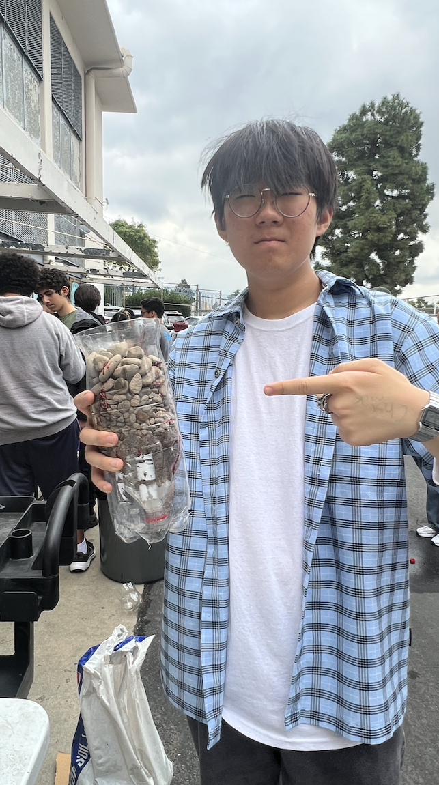
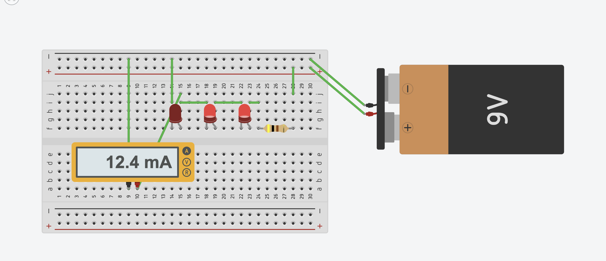

8/25/23 - Journal Entry #1
This week in engineering we started our engineering webstite, first we copied and pasted the website template into our code, then we made a few changes like changing the name of our website, adding an image, and changing the background color. For my website I chose kirby as the image since he is the character I main in super smash bros ultimate, then I added a pink background since it matches Kirby.
The next day we went over some important presentations about the engineering processes and proper safety procedures that we have to practice, it was pretty boring but I still payed attention cause I knew it was important.
Then on thursday we had our first challenge day, we were split up into two teams and had to use pvc pipes to transport a marble into a cup. The challenge seemed easy until we realized that there werent enough pipes to tranport the marbel to the end. The strategy my team used was to keep moving and make sure the marbel went slow. Although my team didnt finish, we still had a good time and made it very close to the cup.
Finnaly on friday we made our first journal entry which is what you just read, I also added a pretty good caramel apple recipe bellow.
Over this weekend im going to play the new Fortnite season with some of my friends. Im also going to go to Honalulu so that I can participate in the Pokemon Go Fest Global 2023 even and hopefully catch a Mega Rayquaza which is my favorite Pokemon.
Caramel Apple Recipe

(Photo of marble challenge)
9/1/23 - Journal Entry #2
This week in engineering we started off the week by going over some slides on the different types of Mechanical Engineering, and what they are all focused on. We also reviewed the propper outfit to have while in the lab which inclides safety glasses, gloves, apron, safety helmet, safety boots, and masks.
The next day after we finished reviewing mechanical engineering, Mr. Poole told us that were going to make a Rube Goldberg Machine that starts with a baseball, and ends by popping a baloon with a needle. Everyone designed their own goldberg machine, then we split up into groups of 3-4 where we designed a machine using everyones original design.
Then on wednesday we had a worksheet on the Mechanical Engineering slides that we went over earlier that week. After we finished the worksheet we went back into our groups and made a lsit of all the materials that we'd need for the goldberg machine.
On thursday we had our first challenge day where everyone had to make a home applience in tinkercad, I made a refrigerator and was one of the two winners.
Finnaly on friday we had our first quiz on the Engineering Process and Safety slides that we went over the previous week, after the quiz we made our second weekly website update.
This weekend im going to play the Charmander Community Day for Pokemon Go, and relax at home for our 3 day weekend.

(Immage of fridge I made for TinkerCAD challenge.)
9/8/23 - Journal Entry #3
This week in engineering we started our first project which was to make a Rube Goldberg Machine that starts with a baseball and ends by popping a baloon with a needle.
This week was kind of rushed since we had an assembly, map tests, a minimum day, and back to school night, the main goal of the week was to create our project blueprint on tinkerCAD then hopfully start working on our building it.
For the first 2 days of the week my group just worked on TinkerCAD, everyone worked on a different section of the machine so that we could finish as fast aas posible, we finished right before class ended on wednesday.
On thursday we didnt do much, we started by making the platform where the baseball would start, but we only made it half way through before class ended. For our projecy my group is planning to use two pulleys, a lever, an inclined plane, and a wheel and axel, I think the hardest park is going to be making the pulleys.
Finally on friday wwe had a short quiz on Mechanical Engineering, then we just worked on our website updates for the rest of class.

(Immage of TinkerCAD project blueprint)
9/15/23 - Journal Entry #4
This week in engineering we started to actually build, and test our Rube Goldberg Machines.
On Monday and Tuesday we working on building the structure of the machine instead of the engineering mechanics so that we'd have a base to work on. Our machine stared by goign down a three leveled ramp into a lever that would push a car into a pulley, dropping a needle onto a balloon, popping it.
Then on Wednesday and a bit of thursday we working on all the engineering mechanics, and we also focused on making sure that the ball is able to make it through the course without any issue.
Finally on thursday and friday we finished out project by taping it to the table and testing it out until the ball was able to pop the consitently. Altough it did work, we had to change a lot of things from our original design, and even improvise on the spot at some point during the project.
(Video of Rube Goldberg Machine)

9/22/23 - Journal Entry #5
This week in engineering the schedule was a bit mixed up since the internet router wasnt working in the engineering room, we started off the week with by letting a few groups fully finish and test their Rube Goldberg machines, then we had 2 challengs, and went over some slides.
On Tuesday we had a challenge where we had to use a piece of paper to hold the most ammount of weight on water for 5 minutes, the strategy my team used was to fold the edges a little so that we'd have lot of surface area while also having wall so stuff couldn’t fall out, our strategy worked, the correct way to do it was to not fold the papper at all since more surface area gave the boat more surface tnesion against the water to stay afloat.
Then on Wednesday we had another challege that would teach us about meassuring correctly. The actual challege was to draw out an E with meassurments marked on it, we would then mix up the pappers and someone else would have to make your E according to your meassurments, Most E's did not look like an E.
Wednesday night some spammed some inappropriate content on the CV e-spots server, so on thursday Mr. Poole told us about the dangers of a negative online presance since he was able to track down the person we sent the inappropriate content on the server. After that we went over some slides computer engineering for the rest of class.
Finally on Friday we made our weekly website update and learned how to attach videos to our websites.
(Immage of E challenge)
9/29/23 - Journal Entry #6
This week in engineering class we disected and looked at all the different components of a pc and laptop.
To begin the week we went over some slides on Computer Engineering and of all the parts of a pc.
Then on tuesday we learned more about the different parts of a computer by discecting one, looking at all the parts, then reassembling it, the computer I worked on couldnt turn on since it had no hard-drive or RAM.
On wednesday after discecting the computer, we did a worksheet where we had to label all the parts that we saw in the computer, then after that we got another computer that we had to reassemble since the class last year didnt finish reasembling them.
Finally on thursday and friday we did out website update and had a quiz on the computer engineering slides from earlier in the week.
This weekend im going to an escape room with some of my friends, and im also going to play a lot of Valorant and Rocket League.
(Immage of Computer Disection)
(Nyan Cat 12 hours cause why not)
10/6/23 - Journal Entry #7
This week in engineering we learned about bioengineering and were able to make a prototype prosthetic hand.
On monday we just went over some slides on bioengineering, we learned that bioengineering involves every other form of engineering.
Then on tuesday and wednesday we had a challenge where we had to make a prosthetic hand out of cardboard, tape, rubber bands and string, my group decided to make a hand where you could control each finger individually, our pland didnt work as expencted so we had to change a few things, but it did eventually work.
On thrusday we watched on videos on bioengineering and did a worksheet on bioengineering.
Finally on friday we had a quiz on bioengineering and did our weekly website update.
This weekend im just going to relax at home and not go to Hoemcomming.
(Immage of me with prosthetic hand prototype)
10/13/23 - Journal Entry #8
This week in engineering we learned about areospace engineering and stated out next project.
On Monday we learned sbout aerospace engineering and how weight, lift, thrust, and drag affects an aircraft.
Then for the rest of the week we started planning for our next project which is to make a bottle rocket that can travel the furthest forward. We designed our bottle rocket and mad BOM (Build of Materials)
(CAD of Bottle Rocket)
BOM of Bottle Rocket
10/20/23 - Journal Entry #9
This week in engineering we finished designing and creating out bottle rockets, then tested them.
On monday we went over out cad and made some final chnges
Then for the next 2 day we worked on our rocket, my groups plan was to make the rocket like an airplne with 3 wings and a nose cone so that it'd be able to travel farther.
On Thurday we tested out rockets, and ours flipped, went backwards, and almost hit someone, so it definately did not go as planned, but it was fun to make these.
Finally on friday we had our aerospace engineering quiz and did our website updates.
(Video of Failed Bottle Rocket)
10/26/23 - Journal Entry #10
This week in engineering we learned about envornmental engineering and made out own water filters.
On monday we went over slides on Environmental Engineering and learned about how wastewatrer is recycled back into drinkable water.
Then on tuesday we did a worksheet on the Environmental Engineering slides we went over on the previous day, and were put into our groups to make a water filter out of a water bottle.
On Wednesday we took out bottle, and put cotton, rocks, and pebbles into our bottle to try and run dirty water through it to make clean water, my groups filter didnt work too well, and the water ended up looking like pee.
Then on Thursday we has a quix on Environmental Engineering and did our website updates.
Over the three day weekend im going to try to 100% complete the new Spider-man 2 game in as many save files as possible, (I've already beat it 2 times)

(Image of my partner holding water filter)
11/3/23 - Journal Entry #11
This week in engineering we learned about electriacal engineering, and simulated some breadboard ciruts
On monday we went over slides on electrical engineering, we learned about OHM's law, the different types of currents, and the differences between parallel and seires circuits.
Then on tuesday and wednesday we did two worksheets on OHM's law and the electrical engineering slides.
Finnaly on thursday and friday we did some circuit practices on tinkerCAD and did our weekly website updates.

(Curcuit practices)
(Electrical Egnineering Slideshow)
11/9/23 - Journal Entry #12
This week in engineering we learned more about electriacal engineering, and made out own circuits.
Throughout the entire week we did simulated circuits on tinkerCAD, then recreated them using real circuits, and codded the lights to go off at different times.
1/9/22 - Journal Entry #13
Semester 1 final review: Spagetti Bridge
- Our bridge weighed around 27.3 grams
- I dont have any of the data for the weight that the bridge held
- The heaviest part of our bridge was the center, because the center is where most of the structural components were.
- We came up with our bridge idea by researching what different types of bridges are used for until we found one that best suited what we were trying to do.
- Our bridge did not worked worse than we intened, because we didnt use enought glue to hold the spagetti together.
- The main point of failure on our bridges were the sides, so if I could improve one thing it would be to add more structure on the sides, and to add more glue

(Images of Final Bridge)
1/ /22 - Journal Entry #12